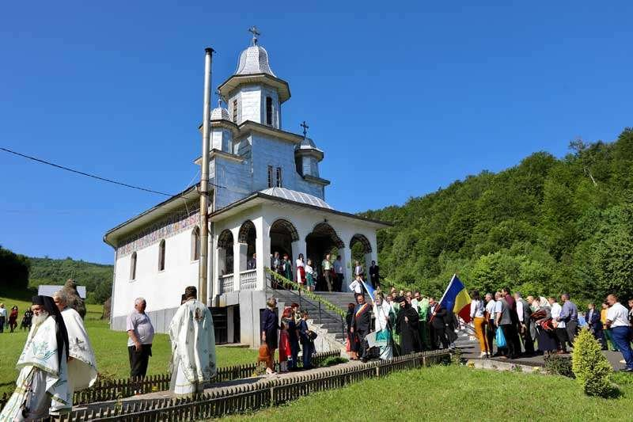
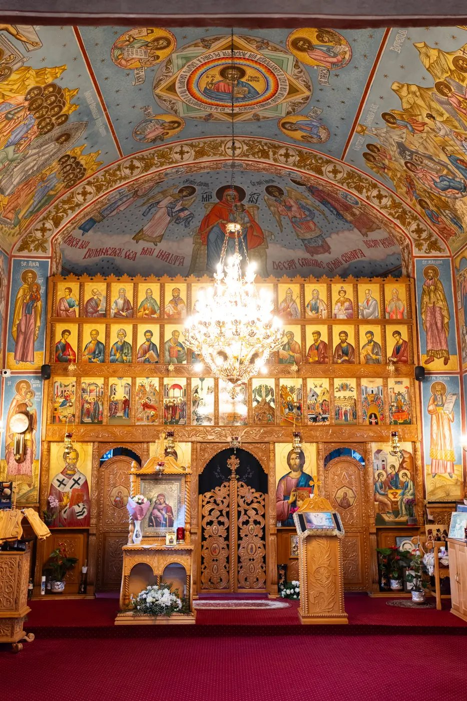

Un popas de liniște și tradiție, aproape de centrul stațiunii — potrivit pentru o dimineață calmă în Breaza, între drumeții și relaxare.

Într-o zonă cunoscută pentru aerul curat și liniștea ei, Mănăstirea Breaza este un reper spiritual la scurtă distanță de vilă — un loc de reculegere pe care îl poți include ușor într-un weekend altfel dedicat naturii și relaxării.
Mănăstirea se integrează în peisajul liniștit al Brezei, oferind un moment de pace departe de agitația orașului. O vizită de dimineață se împacă bine cu o plimbare prin centrul stațiunii sau cu o cafea la o terasă din apropiere.
Zona din jur se pretează la plimbări tihnite. Breaza este o stațiune climaterică cu vile istorice și mult verde, așa că drumul spre mănăstire devine el însuși o experiență plăcută.
Pentru cei care vor să îmbine spiritualul cu activul, mănăstirea se poate vizita în aceeași zi cu terenul de golf sau cu o drumeție ușoară pe dealurile din apropiere.

Un asemenea popas se potrivește firesc cu spiritul locului și cu al vilei: aceeași liniște o regăsești și pe hectarul de livadă de la Casa Rodica, un refugiu verde în inima Brezei.
Mănăstirea se combină firesc cu celelalte repere ale orașului: Colegiul Național Militar, centrul stațiunii cu magazinele sale și terenul de golf. Breaza este suficient de compactă cât să vizitezi mai multe obiective într-o singură zi, fără drumuri lungi.
Pentru un grup care caută liniște, un weekend la Breaza poate alterna momentele de reculegere cu plimbări în natură și seri lungi la vilă. Este rețeta unei escapade care odihnește cu adevărat.

Recomandăm să verifici programul de vizitare înainte de a merge și să ai o ținută decentă.
Cu centrul Brezei, Colegiul Militar și terenul de golf — toate la scurtă distanță.
Da, o vizită scurtă se potrivește oricărui grup; restul zilei o petreceți relaxat la vilă.
Casa Rodica
Aceeași liniște o regăsiți și pe hectarul de livadă al vilei — un refugiu verde în inima Brezei, pentru familie și prieteni.
Verifică disponibilitatea